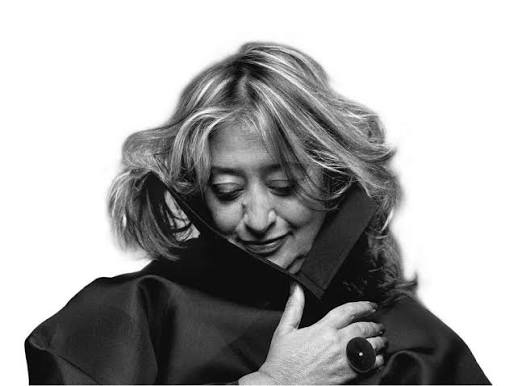
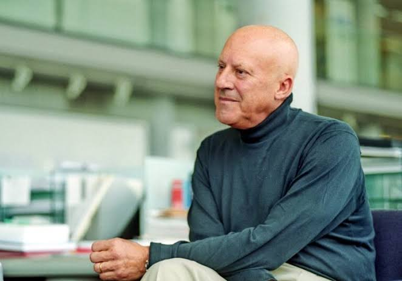
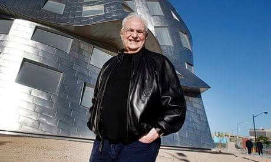
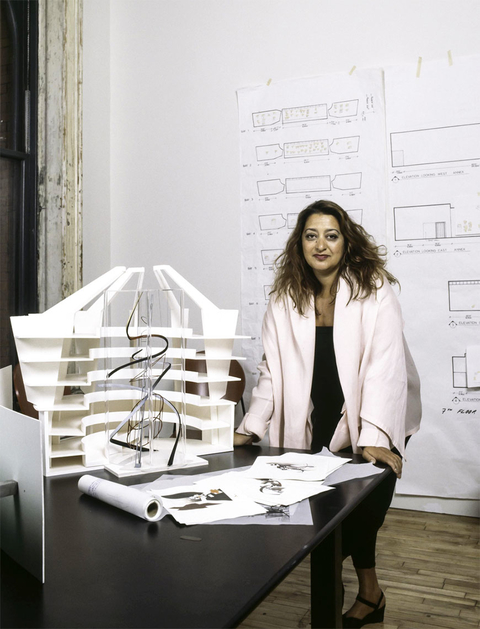
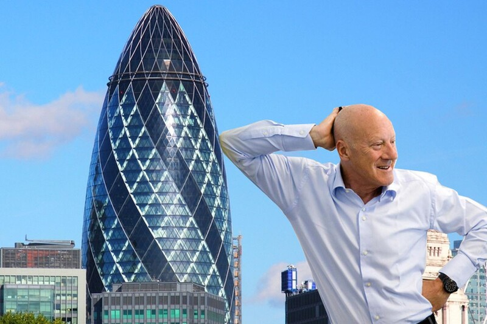
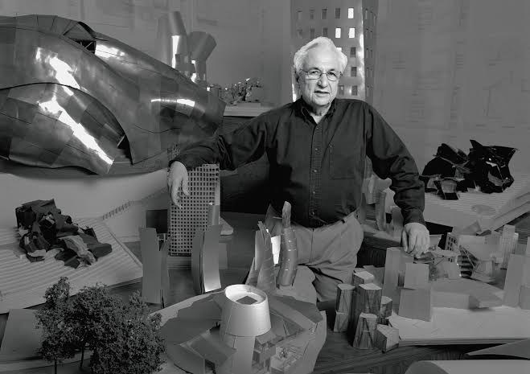

Лого/слоган




Заха Хадид
(1950-2016)

Норман Фостер
(род. 1935)

Фрэнк Гери
(род. 1937)
Заха Хадид - ирако-британский архитектор-деконструктивист, ставшая первой женщиной, награждённой Притцкеровской премией.
Заха Хадид - проектировщица культурного центра Гейдара Алиева, лондонского центра водных видов спорта, оперного театра города Гуанчжоу и множества других. В своих работах она постоянно визуально "растягивает" пространство и использует искажённую перспективу. Не раз в своих интервью она говорила, что её творческий метод сложился под влиянием русского конструктивизма.
The Guardian назвал Заху Хадид "королевой кривой", которая "освободила архитектурную геометрию, придав ей совершенно новую выразительную идентичность".
Норман Фостер - британский архитектор-постмодернист, лауреат Императорской и Притцкеровской премий.
Он - автор множества хай-тек зданий, среди которых башня Мэри-Экс, здание банка HSBC в Гонконге и главный вокзал Дрездена. Но хай-тек - это всего лишь часть пост-модернисткого стиля мистера Фостера. Норман также спроектировал Канэри-Уорф.
Его компания с ним во главе создала несколько зданий и в СНГ! Среди них - Штаб-квартира РМК в Екатеринбурге, монумент "Байтерек" и РЦ "Хан Шатыр".
Фрэнк Гери - американский архитектор-деконструктивист, лауреат Притцкеровской премии.
Среди его проектов - художественный музей Вейсмана, центр Стата в университете MIT, музей Гуггенхейма.
Стиль Гери настолько уникален, что его не вышло категоризовать: все его формы - эксперименты, но все они сделаны с качеством закалённого архитектора.
Фрэнк Гери - американский архитектор-деконструктивист, лауреат Притцкеровской премии.
Среди его проектов - художественный музей Вейсмана, центр Стата в университете MIT, музей Гуггенхейма.
Стиль Гери настолько уникален, что его не вышло категоризовать: все его формы - эксперименты, но все они сделаны с качеством закалённого архитектора.